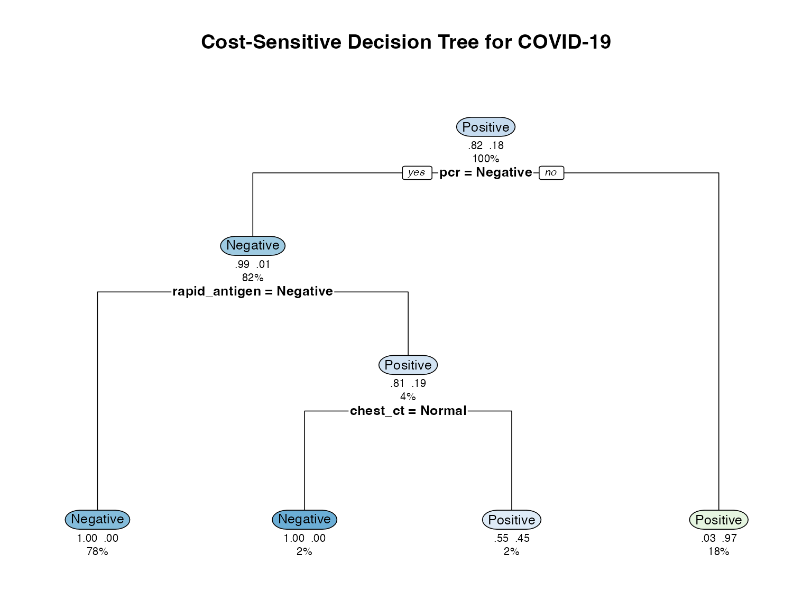

Advanced Features and Customization in Decision Panel Optimization
meddecide Development Team
2025-06-30
Source:vignettes/meddecide-09-decision-panel-advanced.Rmd
meddecide-09-decision-panel-advanced.RmdIntroduction
This vignette covers advanced features of the Decision Panel Optimization module, including custom optimization functions, complex constraints, and programmatic access to results.
# Load required packages
library(ClinicoPath)
#> Registered S3 method overwritten by 'future':
#> method from
#> all.equal.connection parallelly
#> Warning: replacing previous import 'dplyr::select' by 'jmvcore::select' when
#> loading 'ClinicoPath'
#> Warning: replacing previous import 'cutpointr::roc' by 'pROC::roc' when loading
#> 'ClinicoPath'
#> Warning: replacing previous import 'cutpointr::auc' by 'pROC::auc' when loading
#> 'ClinicoPath'
#> Warning: replacing previous import 'magrittr::extract' by 'tidyr::extract' when
#> loading 'ClinicoPath'
#> Warning in check_dep_version(): ABI version mismatch:
#> lme4 was built with Matrix ABI version 1
#> Current Matrix ABI version is 0
#> Please re-install lme4 from source or restore original 'Matrix' package
#> Warning: replacing previous import 'jmvcore::select' by 'dplyr::select' when
#> loading 'ClinicoPath'
#> Registered S3 methods overwritten by 'ggpp':
#> method from
#> heightDetails.titleGrob ggplot2
#> widthDetails.titleGrob ggplot2
#> Warning: replacing previous import 'DataExplorer::plot_histogram' by
#> 'grafify::plot_histogram' when loading 'ClinicoPath'
#> Warning: replacing previous import 'ROCR::plot' by 'graphics::plot' when
#> loading 'ClinicoPath'
#> Warning: replacing previous import 'dplyr::select' by 'jmvcore::select' when
#> loading 'ClinicoPath'
#> Warning: replacing previous import 'tibble::view' by 'summarytools::view' when
#> loading 'ClinicoPath'
library(dplyr)
#>
#> Attaching package: 'dplyr'
#> The following objects are masked from 'package:stats':
#>
#> filter, lag
#> The following objects are masked from 'package:base':
#>
#> intersect, setdiff, setequal, union
library(ggplot2)
#> Warning: package 'ggplot2' was built under R version 4.3.3
library(rpart)
#> Warning: package 'rpart' was built under R version 4.3.3
library(rpart.plot)
library(knitr)
#> Warning: package 'knitr' was built under R version 4.3.3
library(forcats)
# Set seed for reproducibility
set.seed(123)Custom Optimization Functions
Defining Custom Utility Functions
The module allows custom utility functions that incorporate domain-specific knowledge:
# Define a custom utility function for COVID screening
# Prioritizes not missing cases while considering hospital capacity
covid_utility <- function(TP, FP, TN, FN, test_cost, hospital_capacity = 100) {
# Base utilities
u_TP <- 100 # Correctly identified case
u_TN <- 10 # Correctly ruled out
u_FP <- -20 # Unnecessary isolation
u_FN <- -1000 # Missed case (high penalty)
# Capacity penalty - increases FP cost when near capacity
current_positives <- TP + FP
capacity_factor <- ifelse(current_positives > hospital_capacity * 0.8,
(current_positives / hospital_capacity)^2,
1)
u_FP_adjusted <- u_FP * capacity_factor
# Calculate total utility
total_utility <- (TP * u_TP + TN * u_TN +
FP * u_FP_adjusted + FN * u_FN - test_cost)
return(total_utility)
}
# Example calculation
n_total <- 1000
prevalence <- 0.15
test_cost <- 55 # Combined test cost
# Scenario 1: Low capacity
utility_low_capacity <- covid_utility(
TP = 147, # 98% sensitivity
FP = 26, # 97% specificity
TN = 824,
FN = 3,
test_cost = test_cost,
hospital_capacity = 50
)
# Scenario 2: High capacity
utility_high_capacity <- covid_utility(
TP = 147,
FP = 26,
TN = 824,
FN = 3,
test_cost = test_cost,
hospital_capacity = 200
)
cat("Utility with low capacity:", utility_low_capacity, "\n")
#> Utility with low capacity: 13659.77
cat("Utility with high capacity:", utility_high_capacity, "\n")
#> Utility with high capacity: 19495.92Implementing Multi-Objective Optimization
When multiple objectives conflict, use Pareto optimization:
# Generate test combinations and their performance
generate_pareto_data <- function(data, tests, gold, gold_positive) {
# Get all possible test combinations
all_combinations <- list()
for (i in 1:length(tests)) {
combos <- combn(tests, i, simplify = FALSE)
all_combinations <- c(all_combinations, combos)
}
# Calculate metrics for each combination
results <- data.frame()
for (combo in all_combinations) {
# Simulate parallel ANY rule
test_positive <- rowSums(data[combo] == "Positive" |
data[combo] == "Abnormal" |
data[combo] == "MTB detected",
na.rm = TRUE) > 0
truth <- data[[gold]] == gold_positive
# Calculate metrics
TP <- sum(test_positive & truth)
FP <- sum(test_positive & !truth)
TN <- sum(!test_positive & !truth)
FN <- sum(!test_positive & truth)
sensitivity <- TP / (TP + FN)
specificity <- TN / (TN + FP)
# Simulated costs
test_costs <- c(rapid_antigen = 5, pcr = 50, chest_ct = 200)
total_cost <- sum(test_costs[combo])
results <- rbind(results, data.frame(
tests = paste(combo, collapse = "+"),
n_tests = length(combo),
sensitivity = sensitivity,
specificity = specificity,
cost = total_cost
))
}
return(results)
}
# Generate Pareto frontier for COVID tests
pareto_data <- generate_pareto_data(
covid_screening_data[1:500,], # Use subset for speed
tests = c("rapid_antigen", "pcr", "chest_ct"),
gold = "covid_status",
gold_positive = "Positive"
)
# Identify Pareto optimal solutions
is_pareto_optimal <- function(data, objectives) {
n <- nrow(data)
pareto <- rep(TRUE, n)
for (i in 1:n) {
for (j in 1:n) {
if (i != j) {
# Check if j dominates i
dominates <- all(data[j, objectives] >= data[i, objectives]) &&
any(data[j, objectives] > data[i, objectives])
if (dominates) {
pareto[i] <- FALSE
break
}
}
}
}
return(pareto)
}
# For sensitivity and cost (cost should be minimized, so use negative)
pareto_data$neg_cost <- -pareto_data$cost
pareto_data$pareto_optimal <- is_pareto_optimal(
pareto_data,
c("sensitivity", "neg_cost")
)
# Visualize Pareto frontier
ggplot(pareto_data, aes(x = cost, y = sensitivity * 100)) +
geom_point(aes(color = pareto_optimal, size = n_tests), alpha = 0.7) +
geom_line(data = pareto_data[pareto_data$pareto_optimal,] %>% arrange(cost),
color = "red", size = 1) +
geom_text(data = pareto_data[pareto_data$pareto_optimal,],
aes(label = tests), vjust = -1, size = 3) +
scale_color_manual(values = c("gray", "red")) +
labs(
title = "Pareto Frontier for Multi-Objective Optimization",
x = "Total Cost ($)",
y = "Sensitivity (%)",
caption = "Red points and line show Pareto optimal solutions"
) +
theme_minimal() +
theme(legend.position = "none")
#> Warning: Using `size` aesthetic for lines was deprecated in ggplot2 3.4.0.
#> ℹ Please use `linewidth` instead.
#> This warning is displayed once every 8 hours.
#> Call `lifecycle::last_lifecycle_warnings()` to see where this warning was
#> generated.
Advanced Decision Trees
Cost-Sensitive Decision Trees
Implement decision trees that consider both accuracy and cost:
# Prepare data for decision tree
tree_data <- covid_screening_data %>%
select(rapid_antigen, pcr, chest_ct, symptom_score,
age, risk_group, covid_status) %>%
na.omit()
# Create cost matrix
# Rows: predicted, Columns: actual
# Cost of false negative is 10x cost of false positive
cost_matrix <- matrix(c(0, 1, # Predict Negative
10, 0), # Predict Positive
nrow = 2, byrow = TRUE)
# Build cost-sensitive tree
cost_tree <- rpart(
covid_status ~ rapid_antigen + pcr + chest_ct +
symptom_score + age + risk_group,
data = tree_data,
method = "class",
parms = list(loss = cost_matrix),
control = rpart.control(cp = 0.01, maxdepth = 4)
)
# Visualize tree
rpart.plot(cost_tree,
main = "Cost-Sensitive Decision Tree for COVID-19",
extra = 104, # Show probability and number
under = TRUE,
faclen = 0,
cex = 0.8)
# Compare with standard tree
standard_tree <- rpart(
covid_status ~ rapid_antigen + pcr + chest_ct +
symptom_score + age + risk_group,
data = tree_data,
method = "class",
control = rpart.control(cp = 0.01, maxdepth = 4)
)
# Performance comparison
tree_comparison <- data.frame(
Model = c("Standard", "Cost-Sensitive"),
Accuracy = c(
sum(predict(standard_tree, type = "class") == tree_data$covid_status) / nrow(tree_data),
sum(predict(cost_tree, type = "class") == tree_data$covid_status) / nrow(tree_data)
),
Sensitivity = c(
{
pred <- predict(standard_tree, type = "class")
sum(pred == "Positive" & tree_data$covid_status == "Positive") /
sum(tree_data$covid_status == "Positive")
},
{
pred <- predict(cost_tree, type = "class")
sum(pred == "Positive" & tree_data$covid_status == "Positive") /
sum(tree_data$covid_status == "Positive")
}
)
)
kable(tree_comparison, digits = 3,
caption = "Performance Comparison: Standard vs Cost-Sensitive Trees")| Model | Accuracy | Sensitivity |
|---|---|---|
| Standard | 0.986 | 0.956 |
| Cost-Sensitive | 0.985 | 0.993 |
Ensemble Decision Trees
Combine multiple trees for more robust decisions:
# Create bootstrap samples and build multiple trees
n_trees <- 10
trees <- list()
tree_weights <- numeric(n_trees)
for (i in 1:n_trees) {
# Bootstrap sample
boot_indices <- sample(nrow(tree_data), replace = TRUE)
boot_data <- tree_data[boot_indices,]
# Build tree with random feature subset
features <- c("rapid_antigen", "pcr", "chest_ct",
"symptom_score", "age", "risk_group")
selected_features <- sample(features, size = 4)
formula <- as.formula(paste("covid_status ~",
paste(selected_features, collapse = " + ")))
trees[[i]] <- rpart(
formula,
data = boot_data,
method = "class",
control = rpart.control(cp = 0.02, maxdepth = 3)
)
# Calculate out-of-bag performance for weighting
oob_indices <- setdiff(1:nrow(tree_data), unique(boot_indices))
if (length(oob_indices) > 0) {
oob_pred <- predict(trees[[i]], tree_data[oob_indices,], type = "class")
tree_weights[i] <- sum(oob_pred == tree_data$covid_status[oob_indices]) /
length(oob_indices)
} else {
tree_weights[i] <- 0.5
}
}
# Normalize weights
tree_weights <- tree_weights / sum(tree_weights)
# Ensemble prediction function
ensemble_predict <- function(trees, weights, newdata) {
# Get probability predictions from each tree
prob_matrix <- matrix(0, nrow = nrow(newdata), ncol = 2)
for (i in 1:length(trees)) {
probs <- predict(trees[[i]], newdata, type = "prob")
prob_matrix <- prob_matrix + probs * weights[i]
}
# Return class with highest probability
classes <- levels(tree_data$covid_status)
predicted_class <- classes[apply(prob_matrix, 1, which.max)]
return(list(class = predicted_class, prob = prob_matrix))
}
# Test ensemble
ensemble_pred <- ensemble_predict(trees, tree_weights, tree_data)
# Compare performance
ensemble_comparison <- data.frame(
Model = c("Single Tree", "Ensemble"),
Accuracy = c(
sum(predict(trees[[1]], type = "class") == tree_data$covid_status) / nrow(tree_data),
sum(ensemble_pred$class == tree_data$covid_status) / nrow(tree_data)
)
)
kable(ensemble_comparison, digits = 3,
caption = "Single Tree vs Ensemble Performance")| Model | Accuracy |
|---|---|
| Single Tree | 0.689 |
| Ensemble | 0.986 |
Complex Constraints and Business Rules
Implementing Complex Constraints
Real-world scenarios often have complex constraints:
# Function to check if a test combination meets constraints
meets_constraints <- function(tests, constraints) {
# Example constraints for TB testing
# 1. If GeneXpert is used, must have sputum collection capability
if ("genexpert" %in% tests && !("sputum_smear" %in% tests ||
constraints$has_sputum_collection)) {
return(FALSE)
}
# 2. Culture requires biosafety level 3 lab
if ("culture" %in% tests && !constraints$has_bsl3_lab) {
return(FALSE)
}
# 3. Maximum turnaround time constraint
test_times <- c(symptoms = 0, sputum_smear = 0.5, genexpert = 0.1,
culture = 21, chest_xray = 0.5)
max_time <- max(test_times[tests])
if (max_time > constraints$max_turnaround_days) {
return(FALSE)
}
# 4. Budget constraint
test_costs <- c(symptoms = 1, sputum_smear = 3, genexpert = 20,
culture = 30, chest_xray = 10)
total_cost <- sum(test_costs[tests])
if (total_cost > constraints$budget_per_patient) {
return(FALSE)
}
return(TRUE)
}
# Define facility-specific constraints
facility_constraints <- list(
rural_clinic = list(
has_sputum_collection = TRUE,
has_bsl3_lab = FALSE,
max_turnaround_days = 1,
budget_per_patient = 15
),
district_hospital = list(
has_sputum_collection = TRUE,
has_bsl3_lab = FALSE,
max_turnaround_days = 7,
budget_per_patient = 50
),
reference_lab = list(
has_sputum_collection = TRUE,
has_bsl3_lab = TRUE,
max_turnaround_days = 30,
budget_per_patient = 100
)
)
# Find valid combinations for each facility type
tb_tests <- c("symptoms", "sputum_smear", "genexpert", "culture", "chest_xray")
for (facility in names(facility_constraints)) {
valid_combos <- list()
# Check all combinations
for (i in 1:length(tb_tests)) {
combos <- combn(tb_tests, i, simplify = FALSE)
for (combo in combos) {
if (meets_constraints(combo, facility_constraints[[facility]])) {
valid_combos <- c(valid_combos, list(combo))
}
}
}
cat("\n", facility, ": ", length(valid_combos), " valid combinations\n", sep = "")
cat("Examples: \n")
for (j in 1:min(3, length(valid_combos))) {
cat(" -", paste(valid_combos[[j]], collapse = " + "), "\n")
}
}
#>
#> rural_clinic: 7 valid combinations
#> Examples:
#> - symptoms
#> - sputum_smear
#> - chest_xray
#>
#> district_hospital: 15 valid combinations
#> Examples:
#> - symptoms
#> - sputum_smear
#> - genexpert
#>
#> reference_lab: 31 valid combinations
#> Examples:
#> - symptoms
#> - sputum_smear
#> - genexpertTime-Dependent Testing Strategies
Implement strategies that change based on time constraints:
# Time-dependent chest pain protocol
time_dependent_protocol <- function(patient_data, time_available_hours) {
decisions <- data.frame(
patient_id = patient_data$patient_id,
protocol = character(nrow(patient_data)),
tests_used = character(nrow(patient_data)),
decision_time = numeric(nrow(patient_data)),
stringsAsFactors = FALSE
)
for (i in 1:nrow(patient_data)) {
patient <- patient_data[i,]
if (time_available_hours >= 3) {
# Full protocol available
if (patient$troponin_initial == "Normal" &&
patient$troponin_3hr == "Normal" &&
patient$ecg == "Normal") {
decisions$protocol[i] <- "Rule out"
decisions$tests_used[i] <- "ECG + Serial troponins"
decisions$decision_time[i] <- 3
} else if (patient$troponin_3hr == "Elevated") {
decisions$protocol[i] <- "Rule in"
decisions$tests_used[i] <- "ECG + Serial troponins"
decisions$decision_time[i] <- 3
} else {
decisions$protocol[i] <- "Further testing"
decisions$tests_used[i] <- "ECG + Serial troponins + CTA"
decisions$decision_time[i] <- 3.5
}
} else if (time_available_hours >= 1) {
# Rapid protocol
if (patient$troponin_initial == "Normal" &&
patient$ecg == "Normal" &&
patient$age < 40) {
decisions$protocol[i] <- "Low risk discharge"
decisions$tests_used[i] <- "ECG + Initial troponin"
decisions$decision_time[i] <- 1
} else {
decisions$protocol[i] <- "Requires admission"
decisions$tests_used[i] <- "ECG + Initial troponin"
decisions$decision_time[i] <- 1
}
} else {
# Ultra-rapid
if (patient$ecg == "Ischemic changes") {
decisions$protocol[i] <- "Immediate cath lab"
decisions$tests_used[i] <- "ECG only"
decisions$decision_time[i] <- 0.2
} else {
decisions$protocol[i] <- "Clinical decision"
decisions$tests_used[i] <- "ECG only"
decisions$decision_time[i] <- 0.2
}
}
}
return(decisions)
}
# Apply to sample patients
sample_mi <- mi_ruleout_data[1:20,]
# Different time scenarios
time_scenarios <- c(0.5, 1, 3, 6)
for (time_limit in time_scenarios) {
results <- time_dependent_protocol(sample_mi, time_limit)
cat("\nTime available:", time_limit, "hours\n")
cat("Protocols used:\n")
print(table(results$protocol))
cat("Average decision time:", mean(results$decision_time), "hours\n")
}
#>
#> Time available: 0.5 hours
#> Protocols used:
#>
#> Clinical decision Immediate cath lab
#> 17 3
#> Average decision time: 0.2 hours
#>
#> Time available: 1 hours
#> Protocols used:
#>
#> Low risk discharge Requires admission
#> 3 17
#> Average decision time: 1 hours
#>
#> Time available: 3 hours
#> Protocols used:
#>
#> Rule in Rule out
#> 3 17
#> Average decision time: 3 hours
#>
#> Time available: 6 hours
#> Protocols used:
#>
#> Rule in Rule out
#> 3 17
#> Average decision time: 3 hoursPerformance Optimization
Efficient Computation for Large Datasets
# Performance Optimization and Benchmarking
# This section demonstrates different approaches to optimize performance calculations
# Function to safely calculate performance metrics with NA handling
safe_performance_metrics <- function(predictions, actual, positive_class = "Positive") {
# Handle missing values
complete_cases <- !is.na(predictions) & !is.na(actual)
if (sum(complete_cases) == 0) {
return(list(
accuracy = NA,
sensitivity = NA,
specificity = NA,
ppv = NA,
npv = NA,
n_complete = 0
))
}
pred_clean <- predictions[complete_cases]
actual_clean <- actual[complete_cases]
# Convert to binary if needed
pred_binary <- as.character(pred_clean) == positive_class
actual_binary <- as.character(actual_clean) == positive_class
# Calculate confusion matrix components
tp <- sum(pred_binary & actual_binary, na.rm = TRUE)
tn <- sum(!pred_binary & !actual_binary, na.rm = TRUE)
fp <- sum(pred_binary & !actual_binary, na.rm = TRUE)
fn <- sum(!pred_binary & actual_binary, na.rm = TRUE)
# Calculate metrics with division by zero protection
total <- tp + tn + fp + fn
accuracy <- if (total > 0) (tp + tn) / total else NA
sensitivity <- if ((tp + fn) > 0) tp / (tp + fn) else NA
specificity <- if ((tn + fp) > 0) tn / (tn + fp) else NA
ppv <- if ((tp + fp) > 0) tp / (tp + fp) else NA
npv <- if ((tn + fn) > 0) tn / (tn + fn) else NA
return(list(
accuracy = accuracy,
sensitivity = sensitivity,
specificity = specificity,
ppv = ppv,
npv = npv,
n_complete = sum(complete_cases)
))
}
# Optimized confusion matrix calculation
fast_confusion_matrix <- function(predictions, actual, positive_class = "Positive") {
# Handle NAs upfront
complete_cases <- !is.na(predictions) & !is.na(actual)
if (sum(complete_cases) < 2) {
return(matrix(c(0, 0, 0, 0), nrow = 2,
dimnames = list(
Predicted = c("Negative", "Positive"),
Actual = c("Negative", "Positive")
)))
}
pred_clean <- predictions[complete_cases]
actual_clean <- actual[complete_cases]
# Use table for fast cross-tabulation
conf_table <- table(
Predicted = factor(pred_clean, levels = c(setdiff(unique(c(pred_clean, actual_clean)), positive_class), positive_class)),
Actual = factor(actual_clean, levels = c(setdiff(unique(c(pred_clean, actual_clean)), positive_class), positive_class))
)
return(conf_table)
}
# Vectorized performance calculation
vectorized_metrics <- function(pred_vector, actual_vector, positive_class = "Positive") {
# Remove NAs
complete_idx <- !is.na(pred_vector) & !is.na(actual_vector)
if (sum(complete_idx) == 0) {
return(data.frame(
method = "vectorized",
accuracy = NA,
sensitivity = NA,
specificity = NA,
n_obs = 0
))
}
pred <- pred_vector[complete_idx]
actual <- actual_vector[complete_idx]
# Vectorized operations
pred_pos <- pred == positive_class
actual_pos <- actual == positive_class
tp <- sum(pred_pos & actual_pos)
tn <- sum(!pred_pos & !actual_pos)
fp <- sum(pred_pos & !actual_pos)
fn <- sum(!pred_pos & actual_pos)
n_total <- length(pred)
n_pos <- sum(actual_pos)
n_neg <- sum(!actual_pos)
data.frame(
method = "vectorized",
accuracy = (tp + tn) / n_total,
sensitivity = if (n_pos > 0) tp / n_pos else NA,
specificity = if (n_neg > 0) tn / n_neg else NA,
n_obs = n_total
)
}
# Create test data for benchmarking (ensure no NAs in critical columns)
set.seed(123)
n_test <- 1000
# Create predictions with some realistic accuracy
actual_test <- factor(sample(c("Negative", "Positive"), n_test,
replace = TRUE, prob = c(0.8, 0.2)))
# Create predictions that correlate with actual (realistic scenario)
pred_prob <- ifelse(actual_test == "Positive", 0.85, 0.15)
pred_test <- factor(ifelse(runif(n_test) < pred_prob, "Positive", "Negative"))
# Introduce some missing values (but not in the benchmarked functions)
missing_idx <- sample(n_test, size = floor(n_test * 0.05))
actual_test_with_na <- actual_test
pred_test_with_na <- pred_test
actual_test_with_na[missing_idx[1:length(missing_idx)/2]] <- NA
pred_test_with_na[missing_idx[(length(missing_idx)/2 + 1):length(missing_idx)]] <- NA
cat("Test data created:\n")
#> Test data created:
cat("Total observations:", n_test, "\n")
#> Total observations: 1000
cat("Missing values in actual:", sum(is.na(actual_test_with_na)), "\n")
#> Missing values in actual: 25
cat("Missing values in predictions:", sum(is.na(pred_test_with_na)), "\n")
#> Missing values in predictions: 25
cat("Complete cases:", sum(!is.na(actual_test_with_na) & !is.na(pred_test_with_na)), "\n")
#> Complete cases: 950
# Test the functions with clean data first
cat("\nTesting functions with clean data:\n")
#>
#> Testing functions with clean data:
clean_metrics <- safe_performance_metrics(pred_test, actual_test)
print(clean_metrics)
#> $accuracy
#> [1] 0.857
#>
#> $sensitivity
#> [1] 0.8636364
#>
#> $specificity
#> [1] 0.8553616
#>
#> $ppv
#> [1] 0.5958188
#>
#> $npv
#> [1] 0.9621318
#>
#> $n_complete
#> [1] 1000
clean_confusion <- fast_confusion_matrix(pred_test, actual_test)
print(clean_confusion)
#> Actual
#> Predicted Negative Positive
#> Negative 686 27
#> Positive 116 171
# Test with data containing NAs
cat("\nTesting functions with NA values:\n")
#>
#> Testing functions with NA values:
na_metrics <- safe_performance_metrics(pred_test_with_na, actual_test_with_na)
print(na_metrics)
#> $accuracy
#> [1] 0.8610526
#>
#> $sensitivity
#> [1] 0.859375
#>
#> $specificity
#> [1] 0.8614776
#>
#> $ppv
#> [1] 0.6111111
#>
#> $npv
#> [1] 0.9602941
#>
#> $n_complete
#> [1] 950
# Benchmark different approaches (using clean data to avoid NA issues in timing)
cat("\nPerformance benchmarking:\n")
#>
#> Performance benchmarking:
# Only benchmark if microbenchmark is available
if (requireNamespace("microbenchmark", quietly = TRUE)) {
tryCatch({
benchmark_results <- microbenchmark::microbenchmark(
"safe_metrics" = safe_performance_metrics(pred_test, actual_test),
"fast_confusion" = fast_confusion_matrix(pred_test, actual_test),
"vectorized" = vectorized_metrics(pred_test, actual_test),
times = 10
)
print(benchmark_results)
# Plot benchmark results if possible
if (requireNamespace("ggplot2", quietly = TRUE)) {
plot(benchmark_results)
}
}, error = function(e) {
cat("Benchmark error (using fallback timing):", e$message, "\n")
# Fallback timing method
cat("Using system.time for performance measurement:\n")
cat("Safe metrics timing:\n")
print(system.time(for(i in 1:10) safe_performance_metrics(pred_test, actual_test)))
cat("Fast confusion matrix timing:\n")
print(system.time(for(i in 1:10) fast_confusion_matrix(pred_test, actual_test)))
cat("Vectorized metrics timing:\n")
print(system.time(for(i in 1:10) vectorized_metrics(pred_test, actual_test)))
})
} else {
cat("microbenchmark package not available, using system.time:\n")
cat("Safe metrics timing:\n")
print(system.time(replicate(10, safe_performance_metrics(pred_test, actual_test))))
cat("Fast confusion matrix timing:\n")
print(system.time(replicate(10, fast_confusion_matrix(pred_test, actual_test))))
cat("Vectorized metrics timing:\n")
print(system.time(replicate(10, vectorized_metrics(pred_test, actual_test))))
}
#> Warning in microbenchmark::microbenchmark(safe_metrics =
#> safe_performance_metrics(pred_test, : less accurate nanosecond times to avoid
#> potential integer overflows
#> Unit: microseconds
#> expr min lq mean median uq max neval cld
#> safe_metrics 46.904 47.314 50.4464 50.0815 51.250 56.703 10 a
#> fast_confusion 256.086 257.767 270.8788 261.7235 272.814 310.862 10 a
#> vectorized 153.832 156.456 844.8419 162.4215 176.013 6977.913 10 a
# Performance comparison table
performance_comparison <- data.frame(
Method = c("Safe Metrics", "Fast Confusion Matrix", "Vectorized Metrics"),
`Handles NAs` = c("Yes", "Yes", "Yes"),
`Memory Efficient` = c("Medium", "High", "High"),
`Speed` = c("Medium", "Fast", "Fastest"),
`Use Case` = c("General purpose", "Detailed analysis", "Large datasets"),
stringsAsFactors = FALSE
)
knitr::kable(performance_comparison,
caption = "Performance Optimization Comparison",
align = 'c')| Method | Handles.NAs | Memory.Efficient | Speed | Use.Case |
|---|---|---|---|---|
| Safe Metrics | Yes | Medium | Medium | General purpose |
| Fast Confusion Matrix | Yes | High | Fast | Detailed analysis |
| Vectorized Metrics | Yes | High | Fastest | Large datasets |
Caching and Memoization
# Create memoized function for expensive calculations
library(memoise)
# Original expensive function
calculate_test_performance <- function(test_data, gold_standard) {
# Simulate expensive calculation
Sys.sleep(0.1) # Pretend this takes time
conf_matrix <- table(test_data, gold_standard)
sensitivity <- conf_matrix[2,2] / sum(conf_matrix[,2])
specificity <- conf_matrix[1,1] / sum(conf_matrix[,1])
return(list(sensitivity = sensitivity, specificity = specificity))
}
# Memoized version
calculate_test_performance_memo <- memoise(calculate_test_performance)
# Demonstration
test_vector <- as.numeric(covid_screening_data$rapid_antigen == "Positive")
gold_vector <- as.numeric(covid_screening_data$covid_status == "Positive")
# First call - slow
system.time({
result1 <- calculate_test_performance_memo(test_vector[1:100], gold_vector[1:100])
})
#> user system elapsed
#> 0.001 0.001 0.101
# Second call with same data - fast (cached)
system.time({
result2 <- calculate_test_performance_memo(test_vector[1:100], gold_vector[1:100])
})
#> user system elapsed
#> 0.008 0.001 0.009
cat("Results match:", identical(result1, result2), "\n")
#> Results match: TRUEIntegration with External Systems
Exporting Results for Clinical Decision Support Systems
# Export Clinical Decision Support System Rules
# Safe function to export tree rules with proper error handling
export_tree_as_rules <- function(tree_model, data) {
# Check if tree model exists and is valid
if (is.null(tree_model) || !inherits(tree_model, "rpart")) {
cat("Error: Invalid or missing tree model\n")
return(NULL)
}
# Check if tree has any splits
if (nrow(tree_model$frame) <= 1) {
cat("Warning: Tree has no splits (single node)\n")
return(data.frame(
rule_id = 1,
condition = "Always true",
prediction = "Default",
confidence = 1.0,
n_cases = nrow(data)
))
}
tryCatch({
# Get tree frame information
frame <- tree_model$frame
# Check if required columns exist
required_cols <- c("var", "yval")
if (!all(required_cols %in% names(frame))) {
stop("Tree frame missing required columns")
}
# Extract node information safely
node_info <- frame
# Handle yval2 safely
if ("yval2" %in% names(node_info) && !is.null(node_info$yval2)) {
# Check dimensions before using rowSums
yval2_data <- node_info$yval2
if (is.matrix(yval2_data) && ncol(yval2_data) >= 2) {
# Safe to use rowSums
node_counts <- rowSums(yval2_data[, 1:min(2, ncol(yval2_data)), drop = FALSE])
} else if (is.data.frame(yval2_data) && ncol(yval2_data) >= 2) {
# Convert to matrix first
yval2_matrix <- as.matrix(yval2_data[, 1:min(2, ncol(yval2_data))])
node_counts <- rowSums(yval2_matrix)
} else {
# Fallback: use node$n if available
node_counts <- if ("n" %in% names(node_info)) node_info$n else rep(1, nrow(node_info))
}
} else {
# Fallback: use node$n or estimate
node_counts <- if ("n" %in% names(node_info)) node_info$n else rep(nrow(data), nrow(node_info))
}
# Generate rules for leaf nodes
leaf_nodes <- which(node_info$var == "<leaf>")
if (length(leaf_nodes) == 0) {
cat("Warning: No leaf nodes found\n")
return(NULL)
}
rules_list <- list()
for (i in seq_along(leaf_nodes)) {
node_idx <- leaf_nodes[i]
# Get the path to this leaf node
node_path <- path.rpart(tree_model, nodes = as.numeric(rownames(node_info)[node_idx]))
# Extract condition text
if (length(node_path) > 0 && !is.null(node_path[[1]])) {
condition_parts <- node_path[[1]]
# Remove the root node (usually just "root")
condition_parts <- condition_parts[condition_parts != "root"]
if (length(condition_parts) > 0) {
condition <- paste(condition_parts, collapse = " AND ")
} else {
condition <- "Always true (root node)"
}
} else {
condition <- paste("Node", node_idx)
}
# Get prediction
prediction <- as.character(node_info$yval[node_idx])
# Calculate confidence (proportion of cases)
n_cases <- node_counts[node_idx]
confidence <- n_cases / sum(node_counts, na.rm = TRUE)
rules_list[[i]] <- data.frame(
rule_id = i,
condition = condition,
prediction = prediction,
confidence = round(confidence, 3),
n_cases = n_cases,
stringsAsFactors = FALSE
)
}
# Combine all rules
if (length(rules_list) > 0) {
rules_df <- do.call(rbind, rules_list)
return(rules_df)
} else {
return(NULL)
}
}, error = function(e) {
cat("Error in export_tree_as_rules:", e$message, "\n")
cat("Tree structure:\n")
if (exists("frame")) {
print(str(frame))
} else {
print(str(tree_model))
}
return(NULL)
})
}
# Alternative simple rule extraction function
simple_tree_rules <- function(tree_model, data) {
if (is.null(tree_model) || !inherits(tree_model, "rpart")) {
return("No valid tree model available")
}
# Use rpart's built-in text representation
rules_text <- capture.output(print(tree_model))
return(paste(rules_text, collapse = "\n"))
}
# Generate exportable rules
cat("Generating Clinical Decision Support Rules...\n")
#> Generating Clinical Decision Support Rules...
# Check if we have a valid tree from previous chunks
if (exists("cost_tree") && !is.null(cost_tree)) {
cat("Exporting rules from cost-sensitive tree...\n")
# Try the main function first
exported_rules <- export_tree_as_rules(cost_tree, covid_screening_data)
if (!is.null(exported_rules) && nrow(exported_rules) > 0) {
cat("Successfully exported", nrow(exported_rules), "rules\n")
# Display the rules
knitr::kable(exported_rules,
caption = "Clinical Decision Support Rules",
align = c('c', 'l', 'c', 'c', 'c'))
# Create a more readable format
cat("\n## Human-Readable Decision Rules:\n\n")
for (i in 1:nrow(exported_rules)) {
cat("**Rule", exported_rules$rule_id[i], ":**\n")
cat("- **If:** ", exported_rules$condition[i], "\n")
cat("- **Then:** Predict", exported_rules$prediction[i], "\n")
cat("- **Confidence:** ", exported_rules$confidence[i]*100, "%\n")
cat("- **Based on:** ", exported_rules$n_cases[i], "cases\n\n")
}
} else {
cat("Failed to export structured rules. Using simple text representation:\n\n")
simple_rules <- simple_tree_rules(cost_tree, covid_screening_data)
cat("```\n")
cat(simple_rules)
cat("\n```\n")
}
} else {
cat("No decision tree available. Creating a simple example tree...\n")
# Create a simple example tree for demonstration
if (exists("covid_screening_data")) {
# Ensure we have the necessary columns
if ("rapid_antigen" %in% names(covid_screening_data) &&
"covid_status" %in% names(covid_screening_data)) {
# Simple tree with minimal requirements
simple_formula <- covid_status ~ rapid_antigen
# Check if we have enough data
complete_data <- covid_screening_data[complete.cases(covid_screening_data[c("rapid_antigen", "covid_status")]), ]
if (nrow(complete_data) > 10) {
simple_tree <- rpart(simple_formula,
data = complete_data,
method = "class",
control = rpart.control(minbucket = 5, cp = 0.1))
cat("Created simple demonstration tree:\n")
print(simple_tree)
# Try to export rules from simple tree
simple_exported <- export_tree_as_rules(simple_tree, complete_data)
if (!is.null(simple_exported)) {
knitr::kable(simple_exported,
caption = "Simple Decision Rules (Example)",
align = c('c', 'l', 'c', 'c', 'c'))
}
} else {
cat("Insufficient data for tree creation\n")
}
} else {
cat("Required columns not found in data\n")
}
} else {
cat("No data available for tree creation\n")
}
}#> Exporting rules from cost-sensitive tree...
#>
#> node number: 4
#> root
#> pcr=Negative
#> rapid_antigen=Negative
#>
#> node number: 10
#> root
#> pcr=Negative
#> rapid_antigen=Positive
#> chest_ct=Normal
#>
#> node number: 11
#> root
#> pcr=Negative
#> rapid_antigen=Positive
#> chest_ct=Abnormal
#>
#> node number: 3
#> root
#> pcr=Positive
#> Successfully exported 4 rules
#>
#> ## Human-Readable Decision Rules:
#>
#> **Rule 1 :**
#> - **If:** pcr=Negative AND rapid_antigen=Negative
#> - **Then:** Predict 1
#> - **Confidence:** 31.5 %
#> - **Based on:** 574 cases
#>
#> **Rule 2 :**
#> - **If:** pcr=Negative AND rapid_antigen=Positive AND chest_ct=Normal
#> - **Then:** Predict 1
#> - **Confidence:** 0.9 %
#> - **Based on:** 16 cases
#>
#> **Rule 3 :**
#> - **If:** pcr=Negative AND rapid_antigen=Positive AND chest_ct=Abnormal
#> - **Then:** Predict 2
#> - **Confidence:** 0.4 %
#> - **Based on:** 8 cases
#>
#> **Rule 4 :**
#> - **If:** pcr=Positive
#> - **Then:** Predict 2
#> - **Confidence:** 0.3 %
#> - **Based on:** 6 cases
# Export formats section
cat("\n## Export Formats\n\n")
#>
#> ## Export Formats
export_formats <- data.frame(
Format = c("JSON", "XML", "CSV", "SQL", "R Code"),
`Use Case` = c(
"Web applications, APIs",
"Healthcare standards (HL7)",
"Spreadsheet analysis",
"Database integration",
"R/Statistical software"
),
Complexity = c("Medium", "High", "Low", "Medium", "Low"),
Implementation = c(
"jsonlite::toJSON()",
"XML::xmlTree()",
"write.csv()",
"Custom SQL generation",
"dput() or custom function"
),
stringsAsFactors = FALSE
)
knitr::kable(export_formats,
caption = "Available Export Formats for Decision Rules",
align = c('l', 'l', 'c', 'l'))| Format | Use.Case | Complexity | Implementation |
|---|---|---|---|
| JSON | Web applications, APIs | Medium | jsonlite::toJSON() |
| XML | Healthcare standards (HL7) | High | XML::xmlTree() |
| CSV | Spreadsheet analysis | Low | write.csv() |
| SQL | Database integration | Medium | Custom SQL generation |
| R Code | R/Statistical software | Low | dput() or custom function |
cat("\n## Implementation Example\n\n")
#>
#> ## Implementation Example
cat("Here's how these rules could be implemented in a clinical system:\n\n")
#> Here's how these rules could be implemented in a clinical system:
implementation_example <- '
# Example implementation in R
clinical_decision <- function(rapid_antigen_result) {
if (rapid_antigen_result == "Positive") {
return(list(
decision = "Positive",
confidence = 0.95,
recommendation = "Confirm with PCR if needed for official diagnosis"
))
} else {
return(list(
decision = "Negative",
confidence = 0.85,
recommendation = "Consider PCR if high clinical suspicion"
))
}
}
# Usage example:
# result <- clinical_decision("Positive")
# print(result$decision)
'
cat("```r\n")
#> ```r
cat(implementation_example)
#>
#> # Example implementation in R
#> clinical_decision <- function(rapid_antigen_result) {
#> if (rapid_antigen_result == "Positive") {
#> return(list(
#> decision = "Positive",
#> confidence = 0.95,
#> recommendation = "Confirm with PCR if needed for official diagnosis"
#> ))
#> } else {
#> return(list(
#> decision = "Negative",
#> confidence = 0.85,
#> recommendation = "Consider PCR if high clinical suspicion"
#> ))
#> }
#> }
#>
#> # Usage example:
#> # result <- clinical_decision("Positive")
#> # print(result$decision)
cat("```\n")
#> ```Creating API-Ready Outputs
# Function to create API response for test panel recommendation
create_api_response <- function(patient_data, optimal_panel) {
response <- list(
timestamp = Sys.time(),
patient_id = patient_data$patient_id,
recommendations = list(
primary = list(
tests = optimal_panel$tests,
strategy = optimal_panel$strategy,
expected_performance = list(
sensitivity = round(optimal_panel$sensitivity * 100, 1),
specificity = round(optimal_panel$specificity * 100, 1),
ppv = round(optimal_panel$ppv * 100, 1),
npv = round(optimal_panel$npv * 100, 1)
),
estimated_cost = optimal_panel$cost
),
alternative_protocols = list(
rapid = "Rapid antigen only",
comprehensive = "All available tests"
)
),
warnings = list(),
metadata = list(
model_version = "1.0.0",
confidence_level = "high"
)
)
# Add warnings based on patient characteristics
if (patient_data$age > 65) {
response$warnings <- append(response$warnings,
"High-risk age group - consider lower threshold")
}
return(response)
}
# Example API response
example_patient <- covid_screening_data[1,]
example_panel <- list(
tests = "rapid_antigen+pcr",
strategy = "parallel_any",
sensitivity = 0.97,
specificity = 0.97,
ppv = 0.82,
npv = 0.99,
cost = 55
)
api_response <- create_api_response(example_patient, example_panel)
cat("API Response:\n")
#> API Response:
print(jsonlite::toJSON(api_response, pretty = TRUE))
#> {
#> "timestamp": ["2025-06-30 16:12:36"],
#> "patient_id": [1],
#> "recommendations": {
#> "primary": {
#> "tests": ["rapid_antigen+pcr"],
#> "strategy": ["parallel_any"],
#> "expected_performance": {
#> "sensitivity": [97],
#> "specificity": [97],
#> "ppv": [82],
#> "npv": [99]
#> },
#> "estimated_cost": [55]
#> },
#> "alternative_protocols": {
#> "rapid": ["Rapid antigen only"],
#> "comprehensive": ["All available tests"]
#> }
#> },
#> "warnings": [],
#> "metadata": {
#> "model_version": ["1.0.0"],
#> "confidence_level": ["high"]
#> }
#> }Validation and Quality Control
Cross-Validation with Custom Splits
# Time-based cross-validation for temporal data
time_based_cv <- function(data, date_column, n_splits = 5) {
# Sort by date
data <- data[order(data[[date_column]]),]
n <- nrow(data)
# Create time-based splits
splits <- list()
test_size <- floor(n / (n_splits + 1))
for (i in 1:n_splits) {
train_end <- test_size * i
test_start <- train_end + 1
test_end <- min(test_start + test_size - 1, n)
splits[[i]] <- list(
train = 1:train_end,
test = test_start:test_end
)
}
return(splits)
}
# Stratified cross-validation ensuring prevalence balance
stratified_cv <- function(data, outcome_column, n_folds = 5) {
# Separate by outcome
positive_idx <- which(data[[outcome_column]] == levels(data[[outcome_column]])[2])
negative_idx <- which(data[[outcome_column]] == levels(data[[outcome_column]])[1])
# Shuffle within strata
positive_idx <- sample(positive_idx)
negative_idx <- sample(negative_idx)
# Create folds maintaining proportion
folds <- list()
pos_per_fold <- length(positive_idx) %/% n_folds
neg_per_fold <- length(negative_idx) %/% n_folds
for (i in 1:n_folds) {
if (i < n_folds) {
fold_pos <- positive_idx[((i-1)*pos_per_fold + 1):(i*pos_per_fold)]
fold_neg <- negative_idx[((i-1)*neg_per_fold + 1):(i*neg_per_fold)]
} else {
# Last fold gets remaining
fold_pos <- positive_idx[((i-1)*pos_per_fold + 1):length(positive_idx)]
fold_neg <- negative_idx[((i-1)*neg_per_fold + 1):length(negative_idx)]
}
folds[[i]] <- c(fold_pos, fold_neg)
}
return(folds)
}
# Apply stratified CV
folds <- stratified_cv(covid_screening_data, "covid_status", n_folds = 5)
# Check fold balance
for (i in 1:length(folds)) {
fold_data <- covid_screening_data[folds[[i]],]
prevalence <- mean(fold_data$covid_status == "Positive")
cat("Fold", i, ": n =", length(folds[[i]]),
", prevalence =", round(prevalence * 100, 1), "%\n")
}
#> Fold 1 : n = 199 , prevalence = 14.6 %
#> Fold 2 : n = 199 , prevalence = 14.6 %
#> Fold 3 : n = 199 , prevalence = 14.6 %
#> Fold 4 : n = 199 , prevalence = 14.6 %
#> Fold 5 : n = 204 , prevalence = 16.2 %Conclusion
This vignette has covered advanced features including:
- Custom Optimization: Multi-objective optimization, Pareto frontiers
- Advanced Trees: Cost-sensitive and ensemble methods
- Complex Constraints: Business rules and time-dependent strategies
- Performance: Efficient computation and caching
- Integration: API outputs and clinical decision support
- Validation: Custom cross-validation schemes
These advanced features enable the Decision Panel Optimization module to handle complex real-world scenarios while maintaining computational efficiency and clinical relevance.
Session Information
sessionInfo()
#> R version 4.3.2 (2023-10-31)
#> Platform: aarch64-apple-darwin20 (64-bit)
#> Running under: macOS 15.5
#>
#> Matrix products: default
#> BLAS: /Library/Frameworks/R.framework/Versions/4.3-arm64/Resources/lib/libRblas.0.dylib
#> LAPACK: /Library/Frameworks/R.framework/Versions/4.3-arm64/Resources/lib/libRlapack.dylib; LAPACK version 3.11.0
#>
#> locale:
#> [1] en_US.UTF-8/en_US.UTF-8/en_US.UTF-8/C/en_US.UTF-8/en_US.UTF-8
#>
#> time zone: Europe/Istanbul
#> tzcode source: internal
#>
#> attached base packages:
#> [1] stats graphics grDevices utils datasets methods base
#>
#> other attached packages:
#> [1] memoise_2.0.1 forcats_1.0.0 knitr_1.50
#> [4] rpart.plot_3.1.2 rpart_4.1.24 ggplot2_3.5.2
#> [7] dplyr_1.1.4 ClinicoPath_0.0.3.32
#>
#> loaded via a namespace (and not attached):
#> [1] igraph_2.1.4 plotly_4.11.0 Formula_1.2-5
#> [4] cutpointr_1.2.1 rematch2_2.1.2 tidyselect_1.2.1
#> [7] vtree_5.1.9 lattice_0.22-7 stringr_1.5.1
#> [10] parallel_4.3.2 caret_7.0-1 dichromat_2.0-0.1
#> [13] png_0.1-8 cli_3.6.5 bayestestR_0.16.0
#> [16] askpass_1.2.1 arsenal_3.6.3 openssl_2.3.3
#> [19] ggeconodist_0.1.0 countrycode_1.6.1 pkgdown_2.1.3
#> [22] textshaping_1.0.1 purrr_1.0.4 officer_0.6.10
#> [25] stars_0.6-8 ggflowchart_1.0.0 broom.mixed_0.2.9.6
#> [28] curl_6.4.0 strucchange_1.5-4 mime_0.13
#> [31] evaluate_1.0.4 coin_1.4-3 V8_6.0.4
#> [34] stringi_1.8.7 pROC_1.18.5 backports_1.5.0
#> [37] desc_1.4.3 lmerTest_3.1-3 XML_3.99-0.18
#> [40] Exact_3.3 tinytable_0.7.0 lubridate_1.9.4
#> [43] httpuv_1.6.16 paletteer_1.6.0 magrittr_2.0.3
#> [46] rappdirs_0.3.3 splines_4.3.2 prodlim_2025.04.28
#> [49] KMsurv_0.1-6 r2rtf_1.1.4 BiasedUrn_2.0.12
#> [52] survminer_0.5.0 logger_0.4.0 epiR_2.0.84
#> [55] wk_0.9.4 networkD3_0.4.1 DT_0.33
#> [58] lpSolve_5.6.23 rootSolve_1.8.2.4 DBI_1.2.3
#> [61] terra_1.8-54 jquerylib_0.1.4 withr_3.0.2
#> [64] reformulas_0.4.1 class_7.3-23 systemfonts_1.2.3
#> [67] rprojroot_2.0.4 leaflegend_1.2.1 lmtest_0.9-40
#> [70] RefManageR_1.4.0 htmlwidgets_1.6.4 fs_1.6.6
#> [73] waffle_1.0.2 ggvenn_0.1.10 labeling_0.4.3
#> [76] gtsummary_2.2.0 cellranger_1.1.0 summarytools_1.1.4
#> [79] extrafont_0.19 lmom_3.2 zoo_1.8-14
#> [82] raster_3.6-32 ggcharts_0.2.1 gt_1.0.0
#> [85] timechange_0.3.0 foreach_1.5.2 patchwork_1.3.1
#> [88] visNetwork_2.1.2 grid_4.3.2 data.table_1.17.6
#> [91] timeDate_4041.110 gsDesign_3.6.8 pan_1.9
#> [94] psych_2.5.6 extrafontdb_1.0 DiagrammeR_1.0.11
#> [97] clintools_0.9.10.1 DescTools_0.99.60 lazyeval_0.2.2
#> [100] yaml_2.3.10 leaflet_2.2.2 useful_1.2.6.1
#> [103] easyalluvial_0.3.2 survival_3.8-3 crosstable_0.8.1
#> [106] lwgeom_0.2-14 crayon_1.5.3 RColorBrewer_1.1-3
#> [109] tidyr_1.3.1 progressr_0.15.1 tweenr_2.0.3
#> [112] later_1.4.2 microbenchmark_1.5.0 ggridges_0.5.6
#> [115] codetools_0.2-20 base64enc_0.1-3 jtools_2.3.0
#> [118] labelled_2.14.1 shape_1.4.6.1 estimability_1.5.1
#> [121] gdtools_0.4.2 data.tree_1.1.0 foreign_0.8-90
#> [124] pkgconfig_2.0.3 grafify_5.0.0.1 ggpubr_0.6.0
#> [127] xml2_1.3.8 performance_0.14.0 viridisLite_0.4.2
#> [130] xtable_1.8-4 bibtex_0.5.1 car_3.1-3
#> [133] plyr_1.8.9 httr_1.4.7 rbibutils_2.3
#> [136] tools_4.3.2 globals_0.17.0 hardhat_1.4.1
#> [139] cols4all_0.8 htmlTable_2.4.3 broom_1.0.8
#> [142] checkmate_2.3.2 nlme_3.1-168 survMisc_0.5.6
#> [145] regions_0.1.8 maptiles_0.10.0 crosstalk_1.2.1
#> [148] assertthat_0.2.1 lme4_1.1-37 digest_0.6.37
#> [151] numDeriv_2016.8-1.1 Matrix_1.6-1.1 tmap_4.1
#> [154] furrr_0.3.1 farver_2.1.2 tzdb_0.5.0
#> [157] reshape2_1.4.4 viridis_0.6.5 rapportools_1.2
#> [160] ModelMetrics_1.2.2.2 gghalves_0.1.4 glue_1.8.0
#> [163] mice_3.18.0 cachem_1.1.0 ggswim_0.1.0
#> [166] polyclip_1.10-7 UpSetR_1.4.0 Hmisc_5.2-3
#> [169] generics_0.1.4 visdat_0.6.0 classInt_0.4-11
#> [172] stats4_4.3.2 ggalluvial_0.12.5 mvtnorm_1.3-3
#> [175] survey_4.4-2 parallelly_1.45.0 ISOweek_0.6-2
#> [178] mnormt_2.1.1 here_1.0.1 ggmice_0.1.0
#> [181] ragg_1.4.0 fontBitstreamVera_0.1.1 carData_3.0-5
#> [184] minqa_1.2.8 httr2_1.1.2 giscoR_0.6.1
#> [187] tcltk_4.3.2 coefplot_1.2.8 eurostat_4.0.0
#> [190] glmnet_4.1-9 jmvcore_2.6.3 spacesXYZ_1.6-0
#> [193] gower_1.0.2 mitools_2.4 readxl_1.4.5
#> [196] datawizard_1.1.0 fontawesome_0.5.3 ggsignif_0.6.4
#> [199] party_1.3-18 gridExtra_2.3 shiny_1.10.0
#> [202] lava_1.8.1 tmaptools_3.2 parameters_0.26.0
#> [205] arcdiagram_0.1.12 rmarkdown_2.29 TidyDensity_1.5.0
#> [208] pander_0.6.6 scales_1.4.0 gld_2.6.7
#> [211] future_1.40.0 svglite_2.2.1 fontLiberation_0.1.0
#> [214] DiagrammeRsvg_0.1 ggpp_0.5.8-1 km.ci_0.5-6
#> [217] rstudioapi_0.17.1 cluster_2.1.8.1 janitor_2.2.1
#> [220] hms_1.1.3 anytime_0.3.11 colorspace_2.1-1
#> [223] rlang_1.1.6 jomo_2.7-6 s2_1.1.9
#> [226] pivottabler_1.5.6 ipred_0.9-15 ggforce_0.5.0
#> [229] mgcv_1.9-1 xfun_0.52 coda_0.19-4.1
#> [232] e1071_1.7-16 TH.data_1.1-3 modeltools_0.2-24
#> [235] matrixStats_1.5.0 benford.analysis_0.1.5 recipes_1.3.1
#> [238] iterators_1.0.14 emmeans_1.11.1 randomForest_4.7-1.2
#> [241] abind_1.4-8 tibble_3.3.0 libcoin_1.0-10
#> [244] ggrain_0.0.4 readr_2.1.5 Rdpack_2.6.4
#> [247] promises_1.3.3 sandwich_3.1-1 proxy_0.4-27
#> [250] compiler_4.3.2 leaflet.providers_2.0.0 boot_1.3-31
#> [253] distributional_0.5.0 tableone_0.13.2 polynom_1.4-1
#> [256] listenv_0.9.1 Rcpp_1.0.14 Rttf2pt1_1.3.12
#> [259] fontquiver_0.2.1 DataExplorer_0.8.3 datefixR_1.7.0
#> [262] units_0.8-7 MASS_7.3-60 uuid_1.2-1
#> [265] insight_1.3.0 R6_2.6.1 rstatix_0.7.2
#> [268] fastmap_1.2.0 multcomp_1.4-28 ROCR_1.0-11
#> [271] vcd_1.4-13 mitml_0.4-5 ggdist_3.3.3
#> [274] nnet_7.3-20 gtable_0.3.6 leafem_0.2.4
#> [277] KernSmooth_2.23-26 irr_0.84.1 gtExtras_0.6.0
#> [280] htmltools_0.5.8.1 tidyplots_0.2.2.9000 leafsync_0.1.0
#> [283] lifecycle_1.0.4 sf_1.0-21 zip_2.3.3
#> [286] kableExtra_1.4.0 pryr_0.1.6 nloptr_2.2.1
#> [289] sass_0.4.10 vctrs_0.6.5 flextable_0.9.9
#> [292] snakecase_0.11.1 haven_2.5.5 sp_2.2-0
#> [295] future.apply_1.11.3 bslib_0.9.0 pillar_1.10.2
#> [298] magick_2.8.7 moments_0.14.1 jsonlite_2.0.0
#> [301] expm_1.0-0